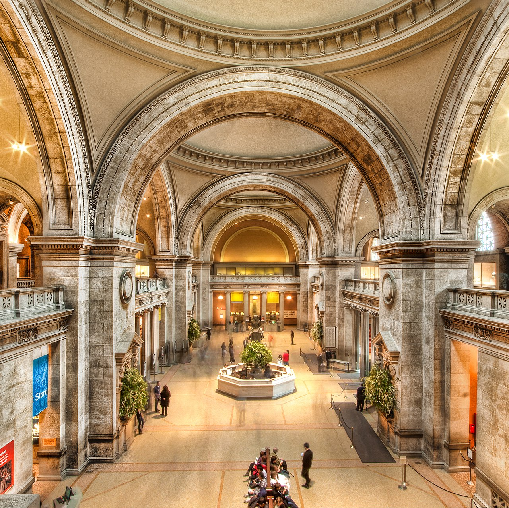

Explore

What We Are About
MonoMuse exists to bring art and technology together in a way that actually feels fun and accessible. We want people to walk in curious and leave inspired. No gatekeeping, no confusing wall text — just good work in a space that is easy to enjoy.
Who This Is For
Honestly, everyone. But especially:
- People who like art, design, or tech and want to see where they overlap
- Students looking for something to do that is not sitting in a library
- Friend groups that want a chill outing with cool things to look at
- Families with kids who like hands-on interactive stuff
- Anyone visiting Pittsburgh who wants to see something unique
Our Story
MonoMuse started in 2015 as a small gallery space in Pittsburgh focused on digital art. It grew pretty quickly because people responded to the idea of a museum that did not take itself too seriously but still showcased incredible work. Over the years it has expanded into a full museum with multiple exhibition halls and a growing community of visitors and artists.
Milestones
- 2015 — MonoMuse opens as a small digital art gallery in Pittsburgh
- 2017 — Expanded into a full museum with three exhibition halls
- 2019 — Launched the first Digital Arts Festival with over 10,000 visitors
- 2021 — Added virtual tours so people could visit from anywhere
- 2023 — Opened a new wing with AI-powered interactive installations